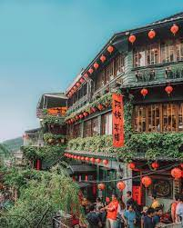
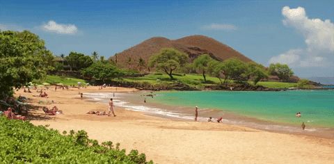
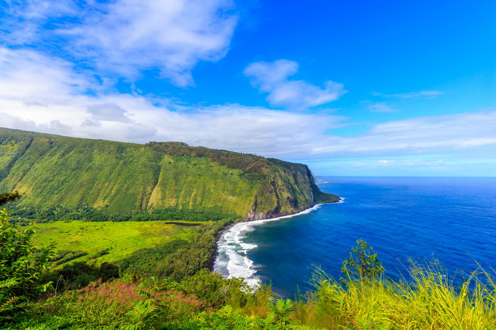
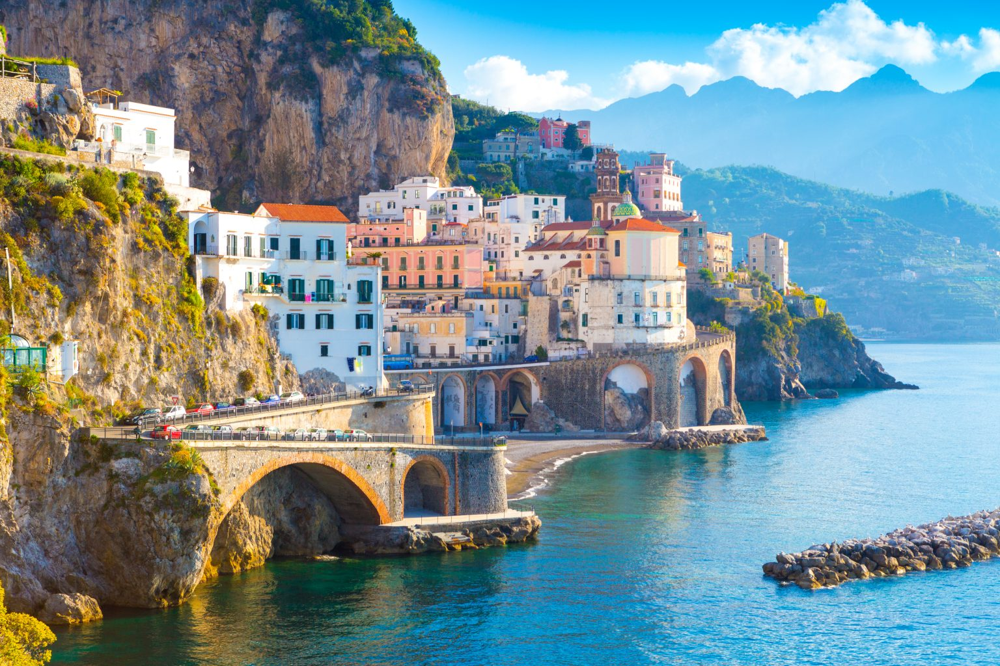
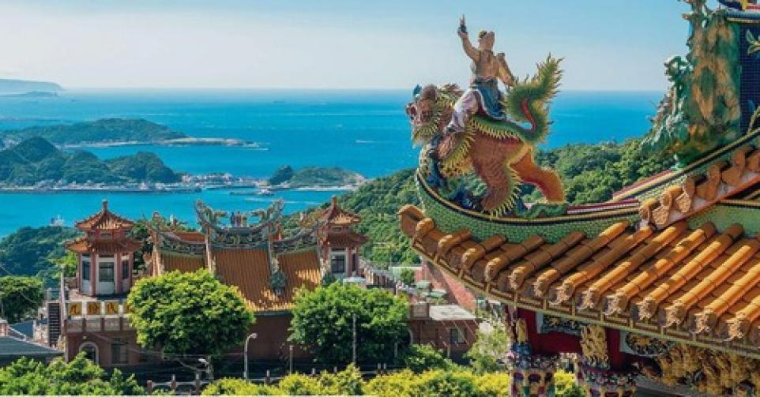
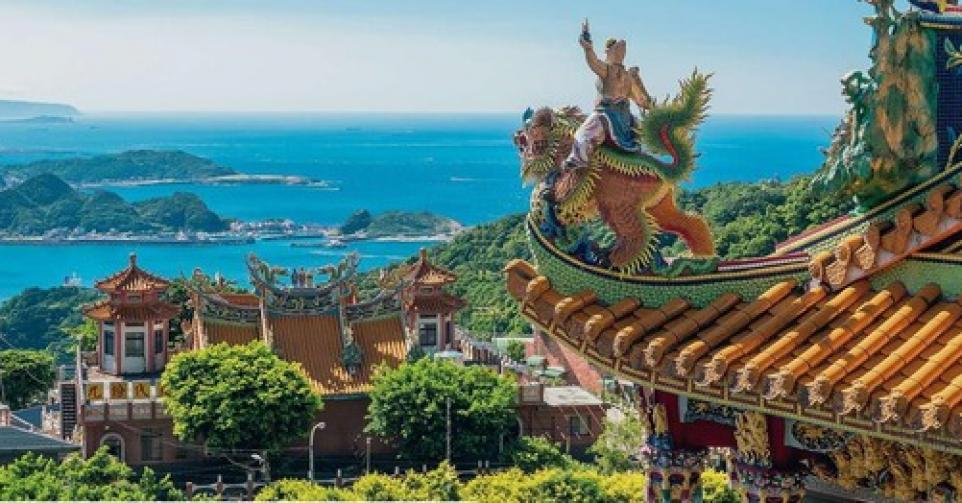
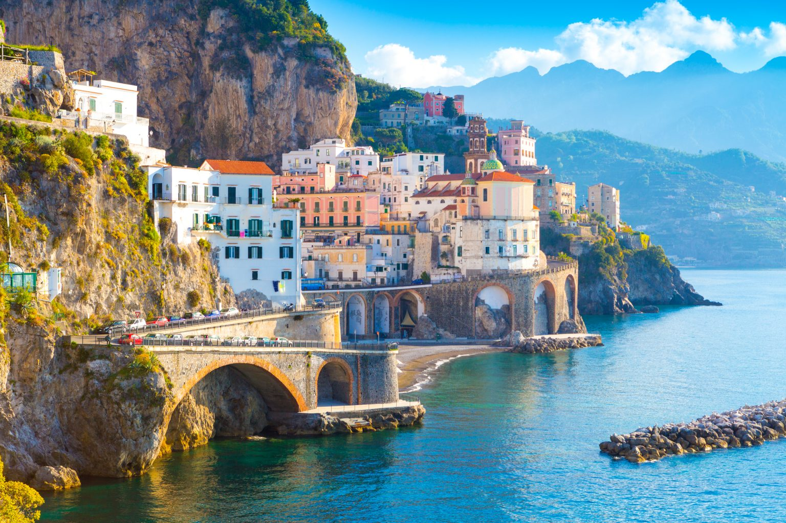
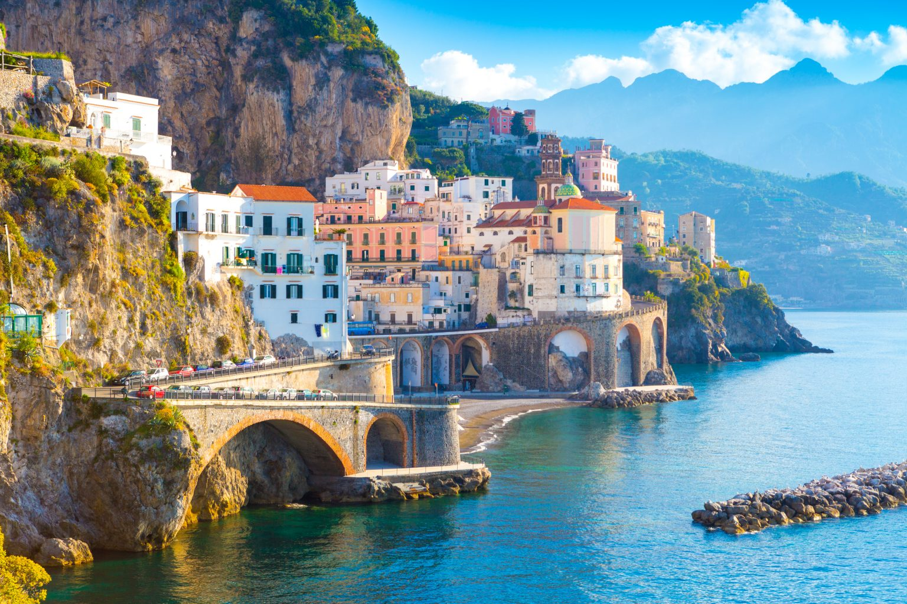

Welcome to Taiwan, an island nation that flawlessly harmonizes modernity with tradition. From bustling night markets serving delectable street food, to serene mountain trails and historic temples, experience a rich cultural tapestry set against a backdrop of spectacular natural beauty.
Photo Gallery
Venture into the heart of Taiwan to discover Alishan, a tranquil mountain range renowned for its lush forests, ethereal sunrises, and quaint tea plantations. Home to indigenous cultures and a world-renowned mountain railway, this serene highland retreat provides a refreshing journey into Taiwan's natural beauty and cultural diversity.Be awestruck by the dramatic beauty of Ch'ing-shui Cliff, one of Taiwan's eight wonders. These vertical cliffs, towering above the Pacific Ocean and stretching along the coast for 21 kilometers, offer visitors a majestically scenic view that perfectly showcases the island's dramatic natural landscapes.

Step into the enchanting old town of Jiufen, a charming destination on Taiwan's northeast coast. With its atmospheric tea houses, narrow alleyways, and remarkable views over the Pacific Ocean, Jiufen provides a captivating glimpse into Taiwan's rich cultural past and present.Taipei 101 is a landmark skyscraper in Taipei, Taiwan. At one point, it held the title of the world's tallest building until it was surpassed by the Burj Khalifa in Dubai. Still, Taipei 101 remains an architectural marvel, boasting of its unique design inspired by the bamboo plant. It's a hub for business, shopping, and dining, with an observation deck that offers a panoramic view of the city.
Mexico City
Geographical Location: Latin America
A sprawling metropolis, Mexico City invites comparisons to other cities for its scale and its importance as a continental hub.
It is more than just urban bustle—it’s a collision of contemporary life with ancient history dating back to the Aztecs. That history echoes through everything here, from street food to music to vivid murals, giving a deeper resonance to daily life.
Photo Gallery
Catedral Metropolitana de la Ciudad de México - One of the largest churches in Latin America, this famous cathedral dominates the Zócalo.The Palacio de Correos de México, also known as the "Correo Mayor" is located in the historic center of Mexico City, on the Eje Central near the Palacio de Bellas Artes. It was built in 1907, when the Post Office became a separate government entity.Gran Hotel Ciudad de Mexico has an exquisitely ornate lobby.Ciudad Universitaria - This neighborhood is the home of the National University of Mexico.
Hawaii


Geographical Location: Central pacific Ocean
Aloha! Embrace the tropical splendor of Hawaii, a paradise brimming with golden beaches, lush rainforests, and the rich allure of Polynesian culture.
Photo Gallery
Dive into the crystal-clear ocean depths and experience the unadulterated joy of snorkeling alongside graceful sea turtles, exploring a vibrant undersea world teeming with life. This surreal adventure will surely leave you captivated and give you a new perspective on marine biodiversity.Immerse yourself in the majestic dance of nature as you witness the breathtaking spectacle of whales breaching. Whale watching offers a thrilling opportunity to observe these awe-inspiring giants in their natural habitat, promoting conservation through an unforgettable travel experience.This 15-mile coastal stretch of towering cliffs and narrow valleys in northwest Kauai is a hotspot for campers. But note: It's only accessible by hiking.Embark on an unforgettable journey along Hawaii's Saddle Road, a unique highway that offers a panoramic showcase of the Big Island's diverse landscapes. From lush rainforests to stark lava fields and the stunning vistas of Mauna Kea and Mauna Loa volcanoes, it's a road trip of high adventure and enchanting beauty.
Cinque Terre

Geographical Location: Europe
Immerse yourself in the serene charm of Cinque Terre, a collection of five picturesque fishing villages along Italy's rugged coastline. With their colorful houses clinging to steep terraces, stunning sea views, and delicious local cuisine, Cinque Terre offers a taste of a slower, more harmonious way of life.
Photo Gallery
Discover the charmed life at Monterosso and Vernazza, two of Cinque Terre's most picturesque villages. Engage with the vibrant Italian culture, take in breathtaking coastal views, and experience unparalleled hiking paths that connect these timeless gems.Step into a world of captivating beauty in Riomaggiore, the easternmost village in Italy's enchanting Cinque Terre. Admire its brightly colored houses nestled against rugged cliffs, enjoy fresh seafood by the marina, or walk its romantic "Via dell'Amore" for a truly unforgettable experience.Explore the scenic splendor of Cinque Terre Trails, where the azure Italian coast meets quaint, brightly colored hillside villages. Experience a captivating blend of natural beauty and cultural richness as you hike these well-trodden paths, revealing panoramic views that promise to take your breath away.Journey to Manarola, one of the radiant jewels of Italy's Cinque Terre, well-known for its dazzling array of colorful houses perched atop rugged cliffsides. Experience the serene allure of its scenic vineyards and take in the panoramic vistas of the Italian Riviera from its striking coastal paths.
 



 
